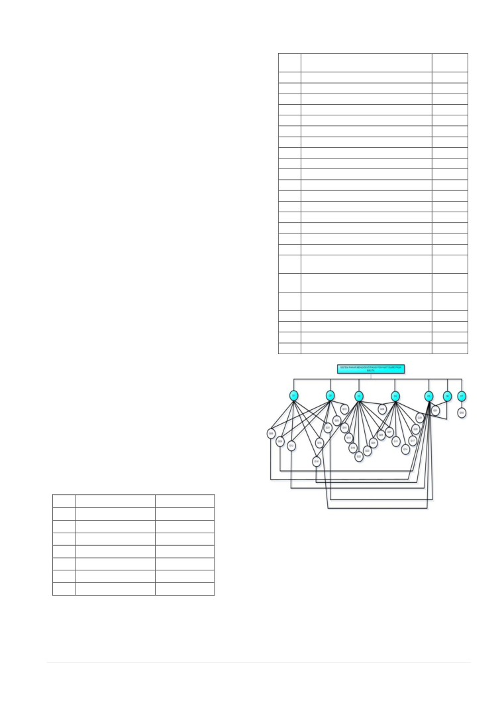

SISTEM PAKAR
Desain Sistem Pakar Mengidentifikasi Diare
Pada Balita
Prawidya Destarianto#1, Putri Nugraheni*2
#Jurusan Teknologi Informasi, Politeknik Negeri Jember
1prawidyadestarianto@yahoo.com
*Jurusan Teknologi Informasi, Politeknik Negeri Jember
2putrinugrahenimif@gmail.com
Abstract
Kesehatan merupakan hal yang penting bagi setiap manusia. Apabila kesehatan mulai menurun, penyakit bisa
menyerang tubuh setiap saat. Penyakit bisa menyerang manusia pada berbagai usia, mulai dari bayi sampai orang dewasa. Daya
ketahanan tubuh yang kurang fit terkadang membuat virus cepat masuk ke dalam tubuh. Oleh karena itu, untuk menjaga
kesehatan perlu menjaga pola makan yang teratur dan gaya hidup yang sehat, sehingga mencegah masuknya penyakit yang
ringan maupun berbahaya. Balita sangat rentan terhadap penyakit yang disebabkan oleh virus, karena daya tahan tubuh
mereka masih lemah untuk melawan virus tersebut. Virus dikenal sangat berbahaya karena penularannya yang begitu cepat dan
sering menjadi penyebab munculnya suatu penyakit. Salah satu jenis penyakit yang disebabkan oleh virus yaitu diare. Hasil
survey dari Badan Kesehatan Dunia (WHO) diare adalah penyebab nomor satu kematian balita di seluruh dunia. Di Indonesia,
diare adalah pembunuh balita nomor dua setelah ISPA (Infeksi Saluran Pernapasan Akut). Oleh karena itu, kesehatan yang
dimiliki oleh seorang balita harus tetap dijaga. Terlebih saat tiba-tiba balita mengalami diare hingga lebih dari tiga kali dalam
sehari. Kebanyakan para orang tua akan segera membawa balita tersebut ke rumah sakit atau ahli medis, karena mereka
mempercayakan kesehatan balita kepada ahli medis. Pengetahuan para orang tua tentang kesehatan terutama penyakit diare
sangatlah terbatas. Oleh karena itu, diperlukan adanya suatu desain aplikasi sistem pakar yang digunakan untuk mempermudah
dalam penanganan, saat orang tua belum bisa membawa balita ke ahli medis. Hal inilah yang mendorong pembangunan suatu
desain sistem pakar mengidentifikasi penyakit diare pada balita dengan menggunakan metode inference tree dan forward
chaining.
Keywords - Balita, Diare, Sistem Pakar
nomor dua setelah ISPA (Infeksi Saluran Pernapasan Akut).
Oleh karena itu, kesehatan yang dimiliki oleh seorang balita
I. PENDAHULUAN
harus tetap dijaga. Terlebih saat tiba-tiba balita mengalami
diare hingga lebih dari tiga kali dalam sehari. Kebanyakan
Kesehatan merupakan hal yang penting bagi setiap
manusia. Penyakit bisa menyerang manusia pada berbagai
para orang tua akan segera membawa balita tersebut ke
rumah sakit atau ahli medis, karena mereka mempercayakan
usia, mulai dari bayi sampai orang dewasa. Balita sangat
kesehatan balita kepada ahli medis.
rentan terhadap penyakit yang disebabkan oleh virus, karena
Penanganan pertama penyakit diare yang dialami oleh
daya tahan tubuh mereka masih lemah untuk melawan virus
tersebut. Virus dikenal sangat berbahaya karena
balita tidak sembarangan untuk menanganinya, harus tepat
dan sesuai dengan aturan yang diberikan oleh seorang pakar.
penularannya yang begitu cepat dan sering menjadi
penyebab munculnya suatu penyakit.
Penanganan harus sesuai dengan pakar atau ahli medis yang
mengetahui lebih banyak tentang penyakit dan kesehatan
Salah satu jenis penyakit yang disebabkan oleh virus
pasien yang tergolong terjangkit penyakit yang ringan
yaitu diare. Di Indonesia, diare adalah pembunuh balita
121 | SEMNASKIT 2015/ ISSN : 2477-5649
sampai tingkat yang kronis.
jaringan dari logika
’AND’ dan
’OR’ sampai sebuah
Oleh karena itu, diperlukan adanya suatu desain aplikasi
terminal ditentukan sebagai objek. Bila mesin inferensi
sistem pakar yang digunakan untuk mempermudah dalam
tidak dapat menentukan objek maka akan meminta
penanganan, saat orang tua belum bisa membawa balita ke
informasi lain. Aturan
(rule) dimana menentukan objek,
ahli medis Pengetahuan para orang tua tentang kesehatan
membentuk lintasan (path) yang mengarah ke objek.
terutama penyakit diare sangatlah terbatas. Para orang tua
tidak mengetahui diare jenis ringan atau diare kronis yang
C. Diare
telah dialami oleh anaknya, sehingga meskipun para orang
Diare adalah pengeluaran tinja yang tidak normal dan
tua dapat menangani penyakit diare yang sebenarnya
cair. Buangan air besar yang tidak normal dan bentuk tinja
tergolong ringan belum tentu melakukannya dengan benar.
yang cair dengan frekuensi yang lebih banyak dari biasanya
Penanganan yang lebih lanjut akan dilakukan dengan
(Oswari,2009).
mengidentifikasi jenis penyakit diare, sehingga tindakan
Diare pada bayi dan anak-anak, pola BAB yang normal
lanjut akan segera dilakukan jika sudah diketahui tingkatan
tergantung dari 2 hal, yaitu frekuensi dan konsisten.
jenis diare tersebut
a. Frekuensi : Pada bayi baru lahir sampai beberapa bulan,
frekuensi BAB berkisar antara 3-8 kali/hari. Pada anak yang
II. TINJAUAN PUSTAKA
lebih besar frekuensi BAB yang normal adalah antara 1-
A. Sistem Pakar
2kali/hari.
Secara umum, sistem pakar (expert system) adalah sistem
b. Konsistensi : Pada bayi baru lahir sampai beberapa bulan
yang berusaha mengadopsi pengetahuan manusia ke
tinjanya berwarna kuning kehijauan dan terkadang terlihat
komputer, agar komputer dapat menyelesaikan masalah
seperti mengandung biji-bijian. Konsistensi tinja pada anak-
seperti yang biasa dilakukan oleh para ahli. Sistem pakar
anak sangat dipengaruhi oleh pola makan mereka sehari-hari.
yang baik dirancang agar dapat menyelesaikan suatu
Setiap perubahan dari konsistensi tinja ini perlu mendapat
permasalahan tertentu dengan meniru kerja dari para ahli.
perhatian orang tua. Darah pada tinja selalu menandakan
Dengan adanya sistem pakar, orang awam pun dapat
ada sesuatu yang tidak beres pada bayi.
menyelesaikan masalah yang cukup rumit yang sebenarnya
Penyebab diare sangat bermacam-macam mulai dari
hanya dapat diselesaikan dengan bantuan para ahli. Bagi
virus, bakteri, parasit, penggunaan antibiotik, hingga pola
para ahli, sistem pakar ini juga akan membantu aktifitasnya
makan yang tidak tepat. Penyebab umum diare adalah
sebagai
asisten
yang
sangat
berpengalaman
infeksi virus (jenis rotavirus), sehingga diare biasanya dapat
(Kusumadewi,2003).
menular melalui tangan ke mulut. Penggunaan antibiotik
Salah satu fitur yang harus dimiliki oleh sistem pakar
yang tidak tepat juga dapat menyebabkan diare. Terlalu
adalah kemampuan untuk menalar. Jika keahlian-keahlian
sering mengonsumsi sirup atau jus-jus yang dijual bebas
sudah tersimpan sebagai basis pengetahuan dan sudah
juga dapat menyebabkan diare.
tersedia program yang mampu mengakses basis data, maka
Diare dapat menyebabkan beberapa hal yang berbahaya
komputer harus dapat di program untuk membuat inferensi.
terutama bila diare cukup berat, yaitu dehidrasi atau
Proses inferensi ini dikemas dalam bentuk motor inferensi
kekurangan cairan, gangguan keseimbangan elektrolit di
(Effendi, 2012).
dalam tubuh, dan syok.
Sebagian besar sistem pakar komersial dibuat dalam
bentuk rule-based system, yang mana pengetahuan disimpan
D. Unified Modelling Language (UML)
dalam bentuk aturan-aturan. Aturan tersebut biasanya
UML adalah keluarga notasi grafis yang didukung oleh
berbentuk IF-THEN. Fitur lainnya dari sistem pakar adalah
meta-model tunggal, yang membantu pendeskripsian dan
kemampuan untuk merekomendasi. Kemampuan inilah
desain sistem perangkat lunak, khususnya sistem yang
yang membedakan sistem pakar dengan sistem
dibangun menggunakan pemrograman berorientasi objek
konvensional.
(Marlyaningrum,2013).
III. HASIL PEMBAHASAN
B. Inferensi
Inferensi merupakan proses untuk menghasilkan
A. Penilaian Keadaan
informasi dari fakta yang diketahui atau diasumsikan.
Diare adalah pengeluaran tinja yang tidak normal dan
Inferensi adalah konklusi logis
(logical conclusion) atau
cair. Buangan air besar yang tidak normal dan bentuk tinja
implikasi berdasarkan informasi yang tersedia. Dalam
yang cair dengan frekuensi yang lebih banyak dari biasanya.
sistem pakar, proses inferensi dilakukan dalam suatu modul
Di kalangan masyarakat penyakit diare cenderung dianggap
yang disebut mesin inferensi (Inference Engine). Ada dua
sebagai penyakit yang remeh karena diatasi dengan cara
model inferensi yang penting dalam sistem pakar, yaitu
yang mudah yaitu memberikan obat-obatan tanpa diketahui
runut maju (forward chaining) dan runut balik (backward
jenis diare yang dialami oleh balita serta tanpa penanganan
chaining) (Alfiah,2011).
yang dilakukan oleh tenaga medis.
Runut maju (forward chaining) kadang disebut data-
Penanganan yang dilakukan oleh masyarakat tidak
driven karena mesin inferensi menggunakan informasi yang
sesuai dikarenakan pengetahuan yang minim tentang
ditentukan oleh user untuk memindahkan ke seluruh
penyakit diare, serta faktor perekonomian yang
122 | SEMNASKIT 2015/ ISSN : 2477-5649

mengharuskan masyarakat berobat keahli medis dengan
Tabel II. Kode Gejala Penyakit Diare pada Balita
No.
Gejala
Kode
biaya yang tidak sedikit.
Gejala
Oleh karena itu, dibuatlah suatu desain aplikasi sistem
1.
Diare 14 hari/lebih
G01
pakar untuk mempermudah penanganan penyakit diare pada
2.
Diare disertai darah dalam tinja
G02
balita. Desain aplikasi sistem pakar diagnosa penyakit diare
pada balita ini dibuat agar masyarakat dengan mudah
3.
Penderita rewel
G03
menggunakan serta mengidentifikasi sebagai pendamping
4.
Penderita terlihat pucat
G04
pengetahuan dari pakar.
5.
Penderita merasa ngantuk
G05
6.
Pernapasan normal
G06
B. Koleksi Pengetahuan
7.
Pernapasan dalam
G07
Setelah proses penilaian keadaan telah selesai
8.
Pernapasan cepat
G08
dilaksanakan, maka disusun koleksi pengetahuan yang
9.
Bentuk ubun-ubun normal
G09
sesuai dengan sistem pakar yang dibuat. Pengetahuan dari
10.
Bentuk ubun-ubun cekung
G10
literatur mengenai jenis penyakit, gejala, dan penanganan
11.
Bentuk ubun-ubun sangat cekung
G11
diare pada balita diperoleh dengan cara mencari referensi
12.
Bentuk kelopak mata normal
G12
dari beberapa buku dan mewawancarai pakar yaitu bidan
Ibu Supinah, A.Md.Keb.
13.
Bentuk kelopak mata cekung
G13
14.
Bentuk kelopak mata sangat cekung
G14
C. Perancangan
15.
Penderita mengeluarkan air mata
G15
Aplikasi diagnosa penyakit diare pada balita ini sangat
16.
Penderita tidak mengeluarkan air mata
G16
mudah digunakan oleh user, karena aplikasi ini
17.
Tidak adanya air mata, sangat kering
G17
mengidentifikasi dari gejala yang dialami oleh pasien
18.
Jika dicubit elastisitas kulit segera normal
G18
selanjutnya menentukan jenis diare apa yang sedang diderita
kembali
beserta penanganannya. Aplikasi ini menggunakan
19.
Jika dicubit elastisitas kulit lambat untuk
G19
permodelan sistem dalam bentuk Use Case Diagram,
normal kembali
Activity Diagram, Sequencial Diagram, dan Class Diagram.
20.
Jika dicubit elastisitas kulit sangat lambat
G20
Dalam perancangan basis pengetahuan digunakan kaidah
untuk normal kembali
berbasis aturan sebagai sarana untuk representasi
21.
Pengeluaran air seni normal
G21
pengetahuan.
22.
Pengeluaran air seni berkurang
G22
Bentuk pernyatannya adalah:
23.
Pengeluaran air seni berwarna tua
G23
JIKA [kondisi 1]
24.
Tidak mengeluarkan air seni
G24
DAN [kondisi 2]
DAN [kondisi 3]
MAKA [nama jenis penyakit]
Adapun contoh Diare Dehidrasi Ringan:
JIKA Penderita rewel
DAN Pengeluaran air seni normal
DAN Jika dicubit elastisitas kulit segera
normal
kembali
DAN Penderita mengeluarkan air mata
DAN Bentuk kelopak mata normal
DAN Bentuk ubun-ubun normal
DAN Pernapasan normal
MAKA Diare dehidrasi ringan
Tabel I. Kode Jenis Penyakit Diare pada Balita
No.
Jenis Diare
Kode Jenis Diare
1.
Diare Tanpa Dehidrasi
D1
Gambar 1. Inference Tree Jenis Penyakit Diare pada Balita
2.
Diare Dehidrasi Ringan
D2
3.
Diare Dehidrasi Sedang
D3
Metode Forward Chaining Aturan (Rule Base) IF THEN
4.
Diare Dehidrasi Berat
D4
menggunakan aturan rule yang dibuat berdasarkan gejala
dan jenis penyakit diare pada balita yang saling berkaitan.
5.
Diare Persisten
D5
Hasil basis pengetahuan disusun berdasarkan rule tersebut.
6.
Diare Persisten Berat
D6
7.
Disentri
D7
123 | SEMNASKIT 2015/ ISSN : 2477-5649
Tabel III. Metode Forward Chaining Aturan (Rule Base) IF THEN
Use case diagram ini menjelaskan menu yang ada dalam
No
Premis
Konklusi
sistem pakar mengidentifikasi penyakit diare pada balita,
If
Then
menu yang pertama yaitu informasi diare pada balita di
1.
G06=1 AND G09=1 AND G12=1 AND
D1
G16=1 AND G18=1 AND G21=1
Diare tanpa
dalamnya berisi informasi yang berkaitan dengan penyakit
Pernapasan normal, bentuk ubun-ubun
dehidrasi
diare pada balita.
normal, bentuk kelopak mata normal,
Menu yang kedua adalah menu mulai diagnosa yang di
penderita tidak mengeluarkan air mata, jika
dalamnya aktor akan memilih gejala yang akan ditampilkan
dicubit elastisitas kulit segera normal kembali,
pengeluaran air seni normal
oleh sistem, selanjutnya sistem akan menampilkan hasil
diagnosa yang sudah sesuai dengan aturan basis
2.
G06=1 AND G09=1 AND G12=1 AND
D2
pengetahuan pakar, lalu sistem akan memberikan solusi atau
G18=1 AND G21=1 AND G03=1 AND
Diare
penanganan. Menu yang ketiga adalah menu keluar, dimana
G15=1
dehidrasi
Pernapasan normal, bentuk ubun-ubun
ringan
aktor bisa keluar dari aplikasi.
normal, bentuk kelopak mata normal, jika
dicubit elastisitas kulit segera normal kembali,
pengeluaran air seni normal, penderita rewel,
E. Activity Diagram
penderita mengeluarkan air mata
3.
G16=1 AND G10=1 AND G13=1 AND
D3
G19=1 AND G22=1 AND G23=1 AND
Diare
G04=1 AND G05=1 AND G07=1 AND
dehidrasi
G08=1
sedang
Penderita tidak mengeluarkan air mata, bentuk
ubun-ubun cekung, bentuk kelopak mata
cekung, jika dicubit elastisitas kulit lambat
untuk normal kembali, pengeluaran air seni
berkurang, pengeluaran air seni berwarna tua,
penderita terlihat pucat, penderita merasa
ngantuk, pernapasan dalam, pernapasan cepat
4.
G08=1 AND G04=1 AND G07=1 AND
D4
G05=1 AND G11=1 AND G14=1 AND
Diare
G17=1 AND G20=1 AND G24=1
dehidrasi
Gambar 3. Activity Diagram Menu Informasi Diare
Pernapasan cepat, penderita terlihat pucat,
berat
pernapasan dalam, penderita merasa ngantuk,
bentuk ubun-ubun sangat cekung, bentuk
Diagram aktifitas pada menu informasi diare pada balita
kelopak mata sangat cekung, tidak adanya air
menggambarkan aktifitas yang akan dilakukan oleh
mata, sangat kering, jika dicubit elastisitas
pengguna, pada tahap ini pengguna memilih menu informasi
kulit sangat lambat untuk normal kembali,
diare pada balita yang ditampilkan pada menu utama
tidak mengeluarkan air seni
5.
G06=1 AND G09=1 AND G12=1 AND
D5
aplikasi ini.
G16=1 AND G18=1 AND G21=1 AND
Diare
G01=1
persistem
Pernapasan normal, bentuk ubun-ubun
normal, bentuk kelopak mata normal,
penderita tidak mengeluarkan air mata, jika
dicubit elastisitas kulit segera normal kembali,
pengeluaran air seni normal, Diare 14
hari/lebih
6.
G01=1 AND G24=1
D6
Diare 14 hari/lebih, tidak mengeluarkan air
Diare
seni
persisten
berat
7.
G02=1
D7
Diare disertai darah dalam tinja
Disentri
D. Use case diagram
Gambar 4. Activity Diagram Menu Mulai Diagnosa
Diagram aktifitas pada menu mulai diagnosa
menggambarkan aktifitas yang dilakukan oleh pengguna,
pada tahap ini pengguna memilih menu mulai diagnosa
yang ditampilkan pada menu utama aplikasi ini. Selanjutnya
sistem akan menerima permintaan menu mulai diagnosa dan
Gambar 2. Use case Sistem Pakar Mengidentifikasi
menampilkan gejala - gejala penyakit diare pada balita.
Penyakit Diare pada Balita
124 | SEMNASKIT 2015/ ISSN : 2477-5649
Pengguna akan menerima tampilan gejala
- gejala serta
Pada class diagram sistem pakar mengidentifikasi
memilih sesuai dengan gejala yang ditampilkan.
penyakit diare pada balita dibagi menjadi 4 class yaitu, class
informasi, class diagnosa, class penanganan, dan class
F. Sequence Diagram
database data gejala. Masing - masing class memiliki atribut
dan operasi yang berbeda - beda.
IV. KESIMPULAN DAN SARAN
A. Kesimpulan
Desain sistem pakar ini dapat digunakan untuk
mengetahui jenis penyakit diare yang sesuai dengan gejala
dan tanda fisik yang dialami balita dengan berbasis android.
Jenis penyakit diare pada balita terdiri dari 7 jenis penyakit
yang meliputi 24 gejala penyakit diare.
B. Saran
Desain sistem pakar mengidentifikasi penyakit diare
pada balita yang telah dicapai masih banyak membutuhkan
saran dan pengembangan serta perbaikan antara lain sebagai
Gambar 5. Sequence Diagram Menu Mulai Diagnosa
berikut :
a. Desain sistem pakar ini menggunakan metode Forward
Pada sequence diagram menu mulai diagnosa di atas
Chaining dan Inference Tree dalam mencari
menjelaskan alur yang bermula user memilih menu mulai
penyelesaian. Untuk penelitian selanjutnya disarankan
diagnosa lalu sistem akan menampilkan gejala dan user
untuk memakai metode perhitungan atau metode lain
akan memilih gejala yang dialami oleh penderita, setelah
agar terlihat adanya pembeda diantaranya.
memilih secara keseluruhan gejala yang ditampilkan, user
b. Dilakukannya pengembangan apabila ada jenis penyakit
akan memproses data yang telah masuk dengan validasi data
atau gejala baru yang mungkin dapat dikategorikan
gejala dari pakar, selanjutnya hasil diagnosa diproses oleh
sebagai penyakit diare pada balita.
sistem dan menampilkan hasil diagnosa.
V. DAFTAR PUSTAKA
G. Class Diagram
[1] Kusumadewi, Sri.
2003. Artificial Intelligence
(Teknik dan
Aplikasinya). Yogyakarta : Graha Ilmu.
[2] Effendi, Mella Risna dalam Nita dan Rahmat. 2012. Perancangan
Sistem Pakar. Yogyakarta : Ghalia Indonesia.
[3] Alfiah.
2011. Perancangan Sistem Pakar Menggunakan Metode
Forward Chaining, : Bandung:Informatika.
[4] Oswari, Hanifah dan Rudianto Sofwan.
2009.
123 Penyakit dan
Gangguan pada Anak. Jakarta : PT Bhuana Ilmu Populer.
[5] Marlyaningrum, Arini.2013. Aplikasi Sistem Pakar Diagnosis pada
Sistem Komputer. Jakarta : PT Bhuana Ilmu Populer.
Gambar 6. Class Diagram Sistem Pakar Mengidentifikasi
Penyakit Diare pada Balita
125 | SEMNASKIT 2015/ ISSN : 2477-5649